1. 文章问题与主线
文章的核心结论可以压缩为一句话：家庭单身率提高显著增加人均消费端碳排放，基准系数为 0.244；影响主要来自家庭公共品规模经济弱化、生活能源共享不足，以及便利导向消费增加。
单身家庭更可能独立拥有住房、家电、汽车等高价值公共品，导致人均使用和人均碳排放上升。
外出就餐、网购、手机服务、家具耐用品等消费更高频、更个性化，隐含排放上升。
做饭、取暖、用电等生活能源无法在多人家庭内摊薄，人均能源成本和排放增加。
2. 研究背景与文献缺口
文章从两个大背景切入。第一，中国承诺 2030 年前碳达峰、2060 年前碳中和，生产端减排之外，生活方式和家庭消费端排放也越来越重要。第二，单身化、独居化和家庭小型化是第二次人口转变中的重要现象，可能改变家庭消费结构和能源使用方式。
现有研究并不一致。韩国研究发现单人户在大都市可能因住房面积小、共享空间利用更高而降低人均温室气体排放；日本研究则发现单人户碳足迹更高，尤其体现在能源、服装和医疗支出。中国已有研究关注单人户比例与电力消费，但主要看直接用电，难以覆盖餐饮、交通、住房、购物等消费背后的间接排放。
本文的定位
作者把研究对象从“直接电力排放”扩展到“消费端总碳排放”，将 CFPS 家庭消费支出与产业部门碳排放强度连接起来，估计家庭结构变化如何通过消费组合影响人均碳排放。
| 研究张力 | 已有发现 | 本文如何推进 |
|---|---|---|
| 单人户可能节能 | 小户型、较少居住空间、城市共享设施可能降低排放。 | 本文不预设方向，而是用中国家庭数据检验净效应。 |
| 单人户可能高碳 | 住房、家电、交通和餐饮无法共享，人均固定消耗更高。 | 本文把规模经济、便利消费、能源共享拆成机制。 |
| 中国证据不足 | 已有中国证据偏重电力消费，忽略消费隐含碳排放。 | 本文使用八类家庭消费支出与产业排放强度估算人均碳排放。 |
3. 理论机制与研究假设
文章提出两个假设。假设 1 是方向性命题：家庭单身率对人均碳排放有正向影响。假设 2 是机制命题：正向影响通过三条路径实现，即高价值家庭公共品规模经济下降、便利导向消费增加、生活能源共享下降。
机制 1：高价值公共品的规模经济下降
多人家庭可以共享住房、冰箱、洗衣机、汽车等固定投入。单身家庭即使居住面积较小，人均住房面积、每人拥有住房套数、每人拥有汽车数量和购车支出也可能更高，导致单位服务的碳排放上升。
机制 2：便利导向消费
单身群体更偏好即时、便利和个性化消费，例如外出就餐、外卖、网购、手机服务、频繁更新服装和电子产品。这些消费本身并不都是“能源账单”，但背后包含包装、物流、餐饮服务和制造环节的隐含排放。
机制 3：生活能源共享不足
厨房燃料、取暖和家电用电都有固定成本。一人做饭、一人取暖、一人使用大型家电，会让能源消耗难以在家庭成员之间摊薄，从而提高人均碳排放。
4. 数据、变量与排放测算
4.1 数据来源
研究使用北京大学中国家庭追踪调查 CFPS，覆盖 25 个省级地区，分析 2010-2022 年七轮家庭数据。作者对连续变量取对数，比例变量保留原值，对主要变量进行 1% 和 99% 缩尾，并剔除主变量三倍标准差以外的观测。
一个需要注意的样本量细节
摘要和所有主要表格报告观测量为 63,412，但数据来源段落写“最终非平衡面板为 62,412 个家庭”。这可能是排版或版本差异造成的口径不一致，汇报时建议按表格中的 63,412 说明，并把该处作为论文细节瑕疵指出。
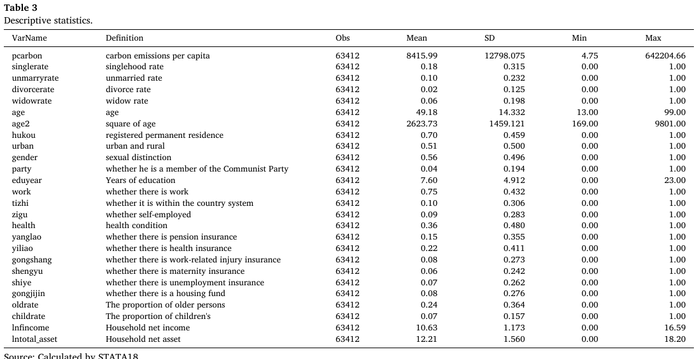
4.2 被解释变量：人均消费端碳排放
被解释变量是家庭人均碳排放的自然对数，记为 lnpcarbon。作者没有采用完整生命周期评估 LCA，而采用投入产出思路：把家庭消费支出映射到产业部门，再用产业能源强度与标准煤排放系数计算消费类别的碳排放强度。
CE = sum_{i=1}^{8} CS_i * CI_i
其中 CI_i 是第 i 类消费的碳排放强度，w=2.493 是标准煤碳排放系数，Ind 是相关行业标准煤消耗，Delta 是行业总产值，CS_i 是家庭在第 i 类消费上的支出。
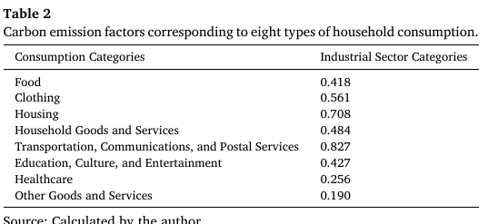
4.3 核心解释变量与控制变量
核心解释变量是家庭单身率：家庭中 20 岁及以上且婚姻状态为未婚、离婚或丧偶成员占家庭总人口的比例。控制变量包括户主年龄及平方项、城乡、户口、政治面貌、性别、教育、就业、体制内就业、自雇、健康、养老/医疗/工伤/生育/失业保险、住房公积金、老人抚养比、儿童抚养比、家庭收入和家庭净资产。
5. 基准模型与核心结果
5.1 双向固定效应模型
文章采用地区和年份双向固定效应模型。写成简化形式：
其中 mu_i 吸收地区不随时间变化的特征，lambda_t 控制全国共同年份冲击，beta_1 是作者最关心的单身率系数。文章报告 VIF 均小于 5，Hausman 检验支持固定效应模型。
5.2 描述性事实
中国统计年鉴数据中，2001-2023 年人均碳排放从 1.532 吨上升到 14.243 吨，单身率从 25.9% 上升到 28.8%。原文图1给出单身率与人均碳排放的正相关趋势。
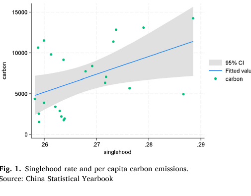
5.3 表5：基准回归
| 变量 | 系数 | 含义 |
|---|---|---|
| 单身率 | 0.244*** | 单身率越高，人均消费端碳排放越高。 |
| 未婚率 | 0.323*** | 三类单身状态中影响最大，作者认为与年轻、城市、高收入和享乐型消费相关。 |
| 离婚率 | 0.309*** | 同样显著为正，幅度接近未婚率。 |
| 丧偶率 | 0.065*** | 仍为正，但幅度明显较小。 |
| 城市 | 0.123*** | 城市家庭人均消费排放更高。 |
| 家庭收入 | 0.158*** | 收入越高，人均消费端排放越高。 |
| 家庭净资产 | 0.072*** | 财富水平与排放显著正相关。 |
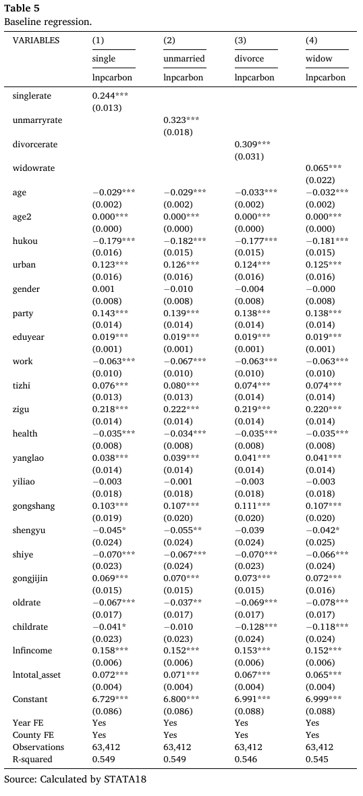
系数如何读更稳妥
由于被解释变量是 lnpcarbon，核心解释变量是 0 到 1 的比例，0.244 更准确地说是“单身率增加 1 个单位，也就是 100 个百分点，对 log 人均碳排放的半弹性”。如果单身率增加 0.01，log 人均排放约增加 0.00244，近似 0.244%。原文把它表述成“1% increase leads to 24.4% rise”，汇报时建议解释为“系数为 0.244 且显著，方向和相对大小是关键”。
6. 稳健性与内生性
6.1 替换被解释变量
作者使用家庭用电数据计算“人均电力碳排放”作为替代被解释变量，单身率系数为 0.168，仍在 1% 水平显著。系数低于基准 0.244，说明只看电力会低估单身化对总消费排放的影响，因为餐饮、交通、住房和网购等间接排放没有被纳入。
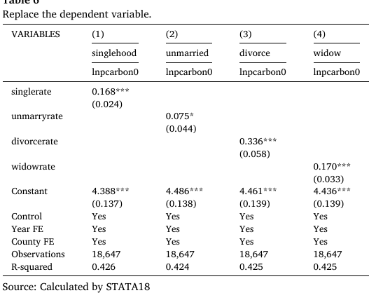
6.2 替换核心解释变量与剔除疫情样本
作者构造两个处理变量：treat0=1 表示家庭中存在任意单身成员，treat1=1 表示家庭单身率等于 1，即完全单身家庭。两者均显著为正，且完全单身家庭系数更大。剔除 COVID-19 样本后，单身率系数为 0.188，仍显著为正。
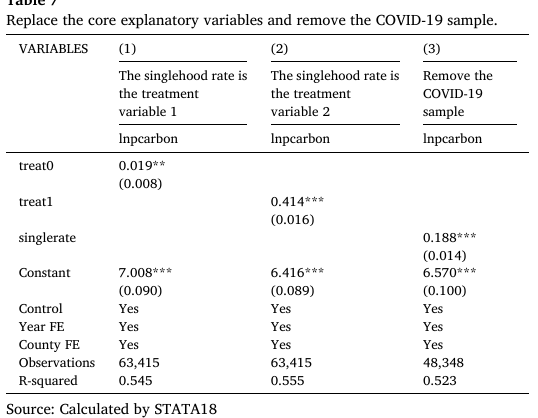
6.3 工具变量分析
为缓解反向因果，文章使用县区层面平均单身率作为家庭单身率的工具变量。第二阶段中单身率系数为 0.306，高于基准回归。第一阶段 F 值为 7953.11，Kleibergen-Paap rk LM 检验 p 值为 0.0000，Cragg-Donald Wald F 值为 6431.774，作者据此认为不存在弱工具变量问题。
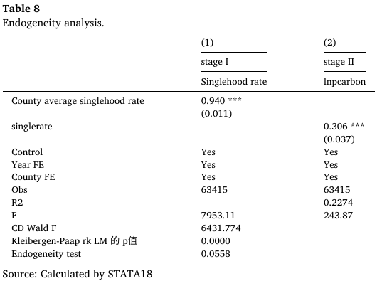
IV 的解释边界
县区平均单身率很可能与本地住房供给、公共交通、消费服务、文化氛围和收入结构共同变化，这些因素也可能直接影响家庭碳排放。因此，这个 IV 在相关性上很强，但排除限制是否完全成立仍需要谨慎。
7. 三条机制检验
7.1 家庭高价值公共品规模经济
单身率显著提高人均住房面积、人均住房套数、人均汽车数量和人均购车支出；这些中介变量进一步显著提高人均碳排放。其中，控制人均住房套数后，单身率对人均碳排放不再显著，作者据此认为住房套数是一个很强的中介。
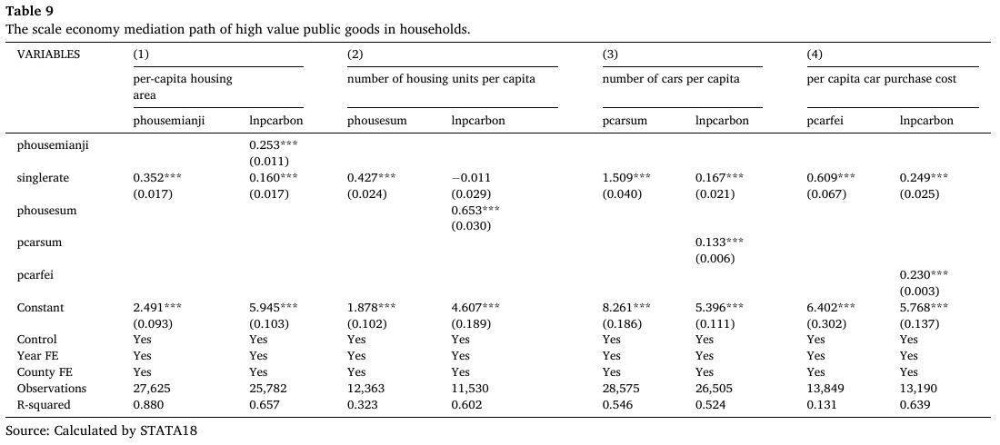
7.2 便利消费
单身群体在外出就餐、家具耐用品、网购和手机费用上具有更高的人均支出。这些变量进入排放回归后均显著为正，说明便利导向消费是单身率影响排放的重要渠道。
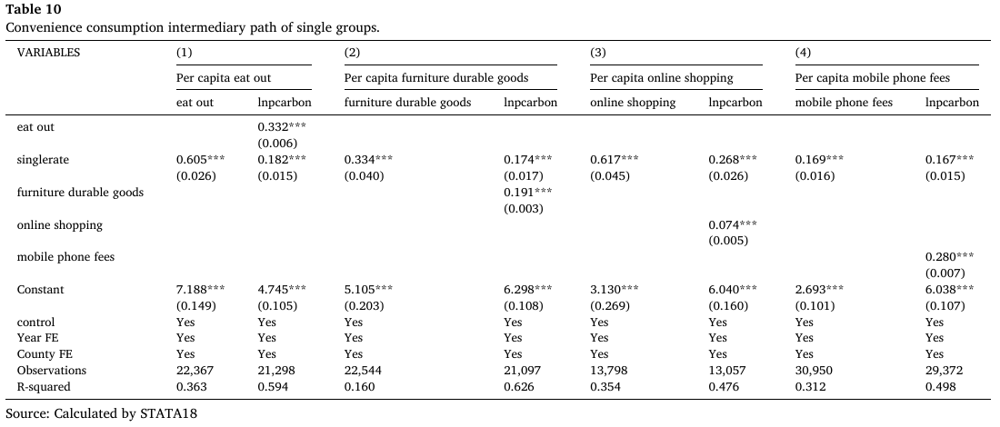
7.3 生活能源共享
作者使用人均燃料费、人均取暖费和人均电费作为能源共享不足的代理变量。结果显示，单身率显著提高这三类人均能源成本，而这些能源成本也显著提高人均碳排放。
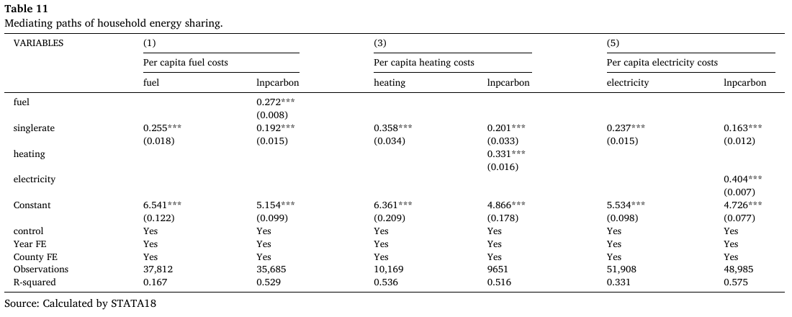
8. 异质性结果
异质性分析的核心发现是：单身率并不是对所有群体均等地提高排放。影响在男性、农村、年轻、高收入和高教育单身群体中更强。
| 维度 | 更高系数组 | 对照组 | 解释 |
|---|---|---|---|
| 性别 | 男性 0.275*** | 女性 0.156*** | 作者认为男性更偏好私家车、肉类、烟酒等碳密集生活方式。 |
| 城乡 | 农村 0.153*** | 城市 0.121*** | 农村更依赖煤炭、柴火等高排放能源，共享经济和公共交通较弱。 |
| 年龄 | 青年 0.308*** | 中年 0.227***；老年 0.120*** | 青年单身的消费活跃度更高，年龄上升后消费和出行强度下降。 |
| 收入 | 最高 25%：0.245*** | 最低 25%：0.141***；中间两组不显著 | 高收入单身总体消费水平高，低收入单身可能依赖高排放燃料。 |
| 教育 | 高教育 0.352*** | 低教育 0.176*** | 高教育群体虽可能环保意识更强，但收入和消费升级效应更大。 |
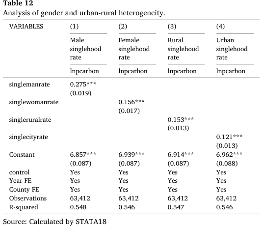
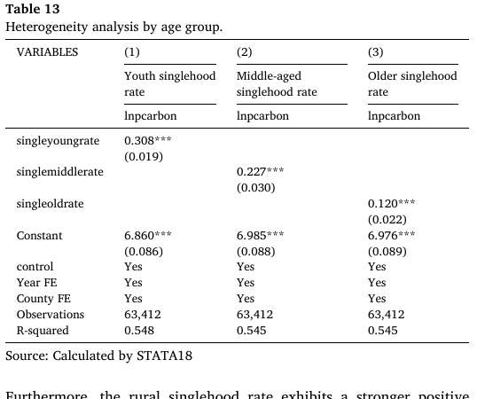
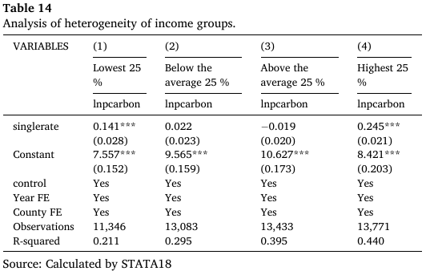
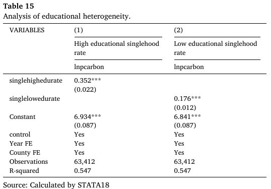
9. 政策建议
文章的政策立场并不是“减少单身”，而是承认家庭结构多元化，在尊重个体选择的前提下提供低碳生活支持。作者提出四类政策方向。
| 政策方向 | 具体做法 | 对应机制 |
|---|---|---|
| 个人碳预算 | 建立个人碳账户、碳足迹工具、碳预算约束与激励。 | 让消费端隐含排放可见化，帮助个体管理排放。 |
| 学习曲线 | 低碳生活数字助手、社区低碳实验室、绿色积分体系。 | 通过反馈、任务和同伴学习降低低碳行为成本。 |
| 敏感干预点 | 在租房、购置家电、买车等关键消费节点推送低碳替代。 | 小干预影响长期高碳路径。 |
| 包容性低碳支持 | 小户型节能产品、共享洗衣房/厨房/工具库、公共交通和慢行网络。 | 用共享基础设施抵消家庭小型化造成的规模经济损失。 |
最重要的规范性边界
文章明确强调，政策目标不应是改变个人婚姻状态，也不应污名化单身群体。减排责任需要公平分担，政策应聚焦于让不同家庭结构都能获得低碳生活的能力与选择。
10. 批判性阅读
1. 系数表述有半弹性口径问题
模型形式决定了 0.244 是比例变量对 log 排放的半弹性，不能简单说“单身率提高 1% 使排放提高 24.4%”。更谨慎的说法是：单身率提高 1 个百分点，对 log 人均排放的影响约为 0.00244，近似 0.244%。
2. 工具变量的排除限制值得讨论
县区平均单身率可能同时反映本地住房市场、服务业发展、公共交通、社交文化和收入结构。这些因素可能直接影响消费排放，因此 IV 结果更像补充证据，而不是完全解决内生性的终局答案。
3. 机制检验存在“消费支出共同来源”的机械关联
被解释变量本身由消费支出乘以排放强度构造，而外出就餐、网购、手机费用、家具耐用品等中介也来自消费支出。机制结果方向有理论意义，但部分相关性可能来自变量构造上的共同来源。
4. 排放测算牺牲了直接能源细节
投入产出法适合大样本家庭消费数据，但无法细分具体化石能源和非化石能源，也较难处理地区电力结构差异、商品生命周期和供应链动态变化。作者也把更细的 LCA 与微观行为数据列为未来研究方向。
总体而言，这篇文章的价值在于把“家庭结构变化”接入消费端减排议题，并用中国家庭面板数据提供系统证据。它的经验结果清晰，机制丰富，政策讨论也较包容；但汇报时最好同时说明系数解释、IV 假设和排放测算口径的边界。